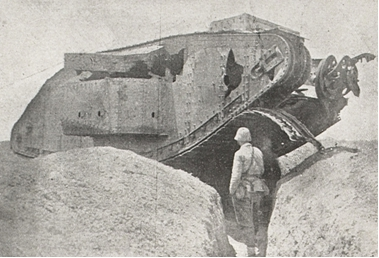

Gazze’ye yapılan taarruzun zaferle püskürtülmesinden sonra, İngilizlerin pek uzak olmayan bir zamanda takviye edilmiş kuvvetlerle yeniden taarruz edecekleri tamamen belliydi. İngiliz taarruzunun muvaffakıyetle tardından sonra, çok garip bir şekilde Cemal aklına, Gazze’yi tahliye etmeyi ve sağ kanadımızı daha geride bulunan bir mevziye çekmeyi, koymuştu. Benim kurmayımla Türk tümen komutanları da aynı fikirde bulunuyor ve şimdi zafer elde edildikten sonra buranın terk edilmesi ve yeni bir İngiliz taarruzunun kabul edilmesi lüzumuna işaret ediyorlardı –Doğuluların zihniyetini çok karakteristik şekilde ortaya koyan bir anlayış-. Paşayı bu yerinde olmayan fikrinden vazgeçirmek için tarafımdan enerjik bir müdahaleye ve İngilizlerin Gazze’nin tahliyesini kendileri için bir muvaffakıyet ve taarruzlarının bir zaferi olarak kaydedeceklerine dair uyarmak gerekmişti. Sağ kanadımızı sahil boyunca geriye çekersek, zaten dağılmış olan zayıf kuvvetlerimizi daha büyük bir cephe üzerinde daha fazla birbirinden ayırmış olacaktık; çünkü Cemal Paşa Bîrüssebi’yi katiyen tahliye etmek istemiyordu. Cephemizi kısaltmak için sağ kanadımızı kuzeydoğu istikametinde geriye alırsak, bu kanat boşta kalacak ve İngilizler tarafından kuşatılabilecekti. Bu suretle menzil nakliyatımız için pek ziyade muhtaç olduğumuz demiryolundan ayrılarak suyu az olan dağlık bölgeye atılmış olacaktık.
Yeni bir İngiliz taarruzunun Gazze–Bîrüssebi hattında kabul edilmesini Cemal nihayet onayladıktan sonra mevzilerimizin tahkimine hummalı bir şekilde çalışılmıştı. Biz tedricen Gazze’den Sihan–Resm el Atavine- Ebu Cerrar–Kavuka–Ebu Rukeyk üzerinden Bîrüssebi’ye mümkün olduğu kadar bağlantılı bir mevzi meydana getirmek istiyorduk. Hâlbuki başlangıçta kuvvetlerimiz böyle geniş bir mevziin işgal ve inşasına yaklaşık olarak bile kâfi gelmiyordu –denizden Bîrüssebi’ye kadar olan mesafe kuşuçuşu 50 kilometre idi- . Bunun için biz tabiaten kuvvetli ve ateşleriyle yekdiğerini himaye edebilecek birçok müstahkem istinat noktaları inşa etmekle yetinmek mecburiyetindeydik. Daha sonra da bu istinat noktalarını müdafaaya elverişli ara hatlarıyla birbirine bağlamak istiyorduk. Mevziimiz iyi ve zaman geçmesiyle mükemmelen inşa edilmişti. Fakat maalesef engellerimize gerekli olan derinlik ve genişliği verebilmek için ne şimdi ve ne de daha sonra elimizde yeterli derecede malzeme mevcut olmamıştı.
Mevziin en bedbaht kısmı Gazze civarındaki sağ kanattı ve bu vaziyette kalmıştı. İlerisini görmenin mümkün olmadığı ve düzensiz bir görüntüsü olan kumluk arazi doğal bir mukavemet hattı arzetmiyordu. Esasen katı olmayan ve denizden esen rüzgârların tesiri altında mütemadiyen hareket halinde bulunan bu kumluk arazide mevzi kazmak mümkün olamıyor bilakis üzerlerinde bitki bulunan kısımlarda kum torbalarıyla tahkimat yapılıyordu. Bu hal karşı taraftaki İngilizlerin de mücadele etmek mecburiyetinde kaldıkları bir durumdu. Fakat bu bizim için daha zordu; zira vücudunda bir tek çamaşır dahi bulunmayan Türk eri kum torbalarını almak için gündüz yapmış olduğunu gece bozuyordu. Bu yolsuzluğa son vermek için çok barbarca cezalar uygulamak gerekmişti. Suriye ve Filistin’deki evlerden teslim edilmiş ve kısmen çok mükemmel kumaşlardan imal edilmiş olan kum torbalarını erat ya iç çamaşırı olarak kullanıyor veyahut da bir kum torbası mukabilinde Bedevîlerden bir portakal veyahut da sigara satın alıyordu.
Kumluk arazide sığınak inşası da imkânsızdı. Diğer taraftan savunuculara dik olan kum tepelerinin arkasındaki birçok ölü açılar bir çeşit barınacak yer teşkil ediyor ve yumuşak olan kum da top mermilerini ya yutuyor veyahut da bunların parçalarının tesirlerini önemli oranda azaltıyordu.
Elimizde bulunan kuvvetlerin gruplandırılması meselesinin görüşülmesinde İngilizlerin mevziimize geriden taarruz için Yafa veya Askalon civarında bir çıkarma yapabilmeleri korkusu mühim bir rol oynamaktaydı. Gerçekte ise her şey böyle bir çıkarma hareketinin yapılamayacağını göstermekteydi. Bir taraftan düşmanımızın Çanakkale’de elde ettiği tecrübeler, Filistin sahillerinde çıkarma hal ve şartlarına çok fazla uygun olmamasını, Pola Limanı’nda üsleri olan denizaltılarımızın nakliye filosunu tehdit etmekte olmaları ve İkinci Gazze Muharebesi’nin başlamasından biraz önce İskenderiye önünde bir düşman kruvazörüyle Portsaid önünde bir yelkenli geminin batırılması gibi olaylar mevcut idiyse de diğer taraftan da arkamızda zayıf düşman kuvvetlerinin bile görünmesi bizim için fevkalâde etkili olacağından İngilizlerin böyle bir tehlikeyi göze almayacaklarından pek de emin bulunamıyorduk. Çok mahir ve faal olan İngiliz istihbarat servisi de böyle uydurma telsizlerle korkularımızı artırıyordu.
İşte böylece 16 Nisan’da, yani yeni İngiliz taarruzundan üç gün evvel tarafımızdan ele geçirilen bir İngiliz telsiz haberi 18 Nisan’da İngilizler tarafından Yafa civarında bir aldatma çıkarması ve ertesi günü de Askalon civarında gerçek bir çıkarma yapacaklarını bildirmekteydi. Bunların bir aldatma manevrası olduğuna dair emareler mevcut olmasına rağmen karşı tedbir almamak hafifmeşreplik olurdu. Bundan dolayı 16. Tümen’in 125. Alayı’nı, Birinci Gazze Muharebesi’nde kendini göstermiş olan cesur ve kabiliyetli komutanı Binbaşı Rahmi Bey’in emri ve komutası altında Beyt Cerda’ya göndermeye karar vermiştim. Bir makineli tüfek bölüğü, bir sahra bataryası ve diğer birkaç kol da alay komutanının emrine verilmişti.
Cemame’de bulunan süvari tümenine de bu işe ait bir emir gelir gelmez en kısa yoldan Mecdel civarına hareket edebilmesi için gerekli olan yolların keşfedilmesi emredilmişti.
18 Nisan günü ordu komutanlığının, Vadi-i Sarar’da trenden indirilmekte olan 54. Tümen’e mensup altı piyade taburuyla iki bataryanın Mecdel’e yürütüleceğini vaat etmesi ve ayın 18. günü Yafa civarında yapılacağı bildirilen gösteriş çıkarmasının gerçekleşmesi üzerine, Rahmi Bey müfrezesini 18/19 Nisan gecesi tekrar ileriye aldırmış ve 53. Tümen emrine vermiştim. İngilizler İkinci Gazze Muharebesi esnasında gerçekten de hiçbir çıkarma hareketi yapmamışlardı.
Kudüs’te bulunan ve o günlerde bilhassa asabi olan ordu komutanlığının pek çok müdahalesi ve damla damla gelen takviye birlikleriyle meydana gelen birçok değişiklikler neticesinde kuvvetlerimizin taksimatı 19 Nisan sabahı şöyleydi:
Gazze’nin önündeki mevziler 3. Tümen tarafından müdafaa edilmekte olup bu tümenin kuvveti tam 6.600 tüfek, 6 makineli tüfek bölüğü, 1 süvari bölüğü ve 4 sahra bataryası ve bunlar da sekiz toplu Avusturya–Macaristan topçu taburu ve piyade havan bölüğüyle takviye edilmiş bulunuyordu. 3. Tümen Komutanı sevimli, sempatik ve aydın bir Genç Türk olan Albay Edip’ti. Lâkin maalesef asker değildi, ince ruhlu ve zor görevler için gerekli sağlam sinirlere sahip değildi.
Kıta komutanı olarak elverişli olmadığını hakkıyla takdir eden Edip Bey muharebeden sonra vazifesinden affını rica etmişti. 3. Tümen’in sağ kanadı kuvvetli bir dayanak noktası olarak inşa edilmiş olan Elmine’de sahile dayanıyordu. Esas müdafaa hattı bundan sonra genel olarak Gazze bahçelerinin güney kenarını takip ediyordu. Daha başka bir takım küçük dayanak noktaları da esas muharebe hattının ilerisinde araziye hâkim olan Ali Muntar tepesinde bulunuyordu. Bu tepe topçu gözetleme mevkii olarak gerekliydi. Bu sebepten piyade mevzileri tepenin güney ve güneydoğu yamaçlarında bulunuyordu.
Vadi-i Halil’in Gazze ile En-Namus arasındaki düz ve örtüsüz çöküntüsünde Binbaşı Tiller 79. Piyade Alayı’yla çok iyi müdafaa tesisatı kurmuştu. Bu alay, kendisine katılan 81. Alay’ın bir taburu, bir makineli tüfek bölüğü ve bir dağ bataryasıyla daha sonra Bîrüssebi’ye nakledilmiş ve İkinci Gazze Muharebesi esnasında bu mevkiin garnizonunu teşkil etmişti. Onun şimdiye kadar işgal etmekte olduğu mevziler yalnız geceleyin, 3. Tümen tarafından işgal ediliyor ve gündüzün açık olan bu arazi 3. ve 53. Tümen’in bataryalarıyla makineli tüfeklerinin tamamen ateşi altında bulunuyor ve bu sebepten işgal edilmiyordu. En-Namus’da 53. Tümen’in sağ kanadı bulunuyordu. Bu tümene 3. Tümen’in eski komutanı Albay Refet emir ve komuta ediyordu. Tümenin harp kuvveti 2.400 tüfek ve 12 makineli tüfeğe ulaşıyordu. Bu tümenin alaylarından birini Cemal Hicaz’a göndermişti. Tümen 5 Türk sahra bataryasıyla, Sihan civarında iyi bir mevzide bulunan 15 santimetrelik Alman obüsü bataryasıyla himaye ediliyordu. Bu tümenin mıntıkası çok geniş olup En-Namus’dan Resm el Atavine’ye kadar on kilometrelik bir sahayı kapsıyordu. Bu sebepten tümen, En-Namus, Sihan ve Resm el Atavine’de bulunan doğası itibarıyla kuvvetli üç tabur istinat noktasında mukavemet etmekle yetinecekti.
Resm el Atavine’den Ebu Cerrar’a kadar olan mıntıka, 16. Tümen tarafından müdafaa ediliyordu. Bu tümenin alaylarından birisi -125. Alay- yukarda arz edildiği üzere tümenden alınmış ve 53. Tümen emrine verilmişti ki, düşman taarruzunun ağırlık merkezinin bu tümen üzerine yüklenmesi bekleniyordu. Tümen cepheye 3.000 tüfek çıkarmış ve ayrıca 3 makineli tüfek bölüğüyle 5 sahra bataryası tümenin emrine verilmiş bulunuyordu. Bundan başka Ebu Cerrar civarında iyi bir mevziye yerleştirilmiş olan çok eski 12 santimetrelik Türk bataryası da bu tümenin emrindeydi. Namlularının yıpranmış olmasına ve Nuh Nebî’den kalma nişan aletlerine rağmen bu batarya muharebe esnasında iyi hizmetler görmüştü.
16. Tümen’in sol kanadından Bîrüssebi’ye kadar 20 kilometrelik bir aralık büyük bir gedik teşkil etmekteydi.
Ben, icabında 53. Tümen’in sağ kanadına yöneltilmiş olan bir düşman taarruzunda, 16. Tümen ve 3. Süvari Tümeni ve Bîrüssebi Grubu ile karşı taarruza geçmek istiyordum. Fakat maalesef araziyi keşfe çıktığım vakit buraların tamamen sütresiz olmasından dolayı bu gibi maksatlar için elverişli olmadığını görmüştüm. Bununla beraber 16. Tümen’in dikenli tel engellerinde, karşı taarruza geçmek için gerekli olan boşluklar bırakılmıştı.
Elimde yegâne ihtiyat olarak Cemame’de bulunan süvari tümeni bulunuyordu ki, bu da üç süvari alayı, üç süvari makineli tüfek bölüğü ve bir süvari bataryasından oluşuyordu. Cephemizin çok geniş olması ve Türk tümenlerinin Birinci Gazze Muharebesi’nde görülen manevra kabiliyetlerinin azlığı dolayısıyla tarafımdan alıkonacak diğer bir ihtiyatın, tehdit edilen mahalle vaktinde yetişebileceğini hesaba katamazdım. Bu sebepten tümenlerden başka bir ihtiyat ayırmaktan vazgeçmiştim. Bunlardan vazgeçerek, muharebenin cereyanı üzerinde etki edebilmek konusunda yegâne ihtimali elinden bırakmak, bir komutan için verilmesi çok güç olan bir karardır.
Elimde toplam olarak 14.000 tüfek, 84 makineli tüfek, 1.200 mızrak, 99 top –bunlardan 10’u ağır ve 89’u hafif olmak üzere ve bunlardan 7’si uçaksavar topu- bulunuyordu. Bizim kıymetli 300 Numaralı Uçak Müfrezemiz de uçmaya hazır altı uçağıyla Remle’de bulunuyordu.
Geride, Vadi-i Hesse’in kuzey kenarında Alman istihkâm Binbaşısı Schrömbgens amele taburlarıyla bir mevzi inşasına başlamıştı. Düşmana hava keşiflerini güçleştirmek için bir sürü sahte bataryalar vücuda getirmiştik. Mühim olan noktalarda avcı siperleri adam boyu derinliğinde kazılmıştı.
İngilizler, Birinci Gazze Muhaberesi’nden sonra esas kuvvetleriyle Tahava–Dir el Ballah–Hanyunus mıntıkasına çekilmişlerdi. İleri karakolları derin siperlerde ve tel örgüleri içinde Gazze Vadisi’nde bulunuyordu. Denizle Tel Ceme arasında uçaklarımız, vadide yedi tane geçitle vadinin doğu kenarına sürülmüş küçük köprübaşları tespit etmişlerdi. Demiryollarının inşaatında son nokta Tahava idi.
İngiliz komutanı, General Dobell’e takviye kıtaları gönderilmişti. Bunlar 174. Tümenle onun her iki atlı tümeninin dördüncü tugayları, iki sahra taburu, 12 ağır top, 8 tank ve 4.000 gaz mermisiydi. Bunlardan başka generalin emrinde Birinci Gazze Muharebesi’nde komuta ettiği birlikler de bulunuyordu. Buna göre general, 40.000 tüfek, 154 hafif ve 16 ağır topu muharebeye sokabilirdi. Hava kuvveti olarak hizmete elverişli 25 uçak bulunuyordu.
Nisan’ın 16. günü Gazze koyunda düşmanın üç harp gemisi görünmüş ve bunlar Ali Muntar’a karşı atışı tanzim etmişlerdi. Ertesi günü aydınlık basarken 53. ve 3. Tümen cephelerinde değişen şiddette sıkı bir topçu ateşi başlayarak bütün öğleden önceki saatlerde devam etmiş ve ancak akşama doğru kesilmişti. Düşman piyadesi yalnız en batı kanatta görünmüştü; bir İngiliz taburu burada 3. Tümen’den Tel Ebu Acul üzerine ileri sürülmüş bir bölüğe taarruz ederek bölüğü mevziini terk etmeye mecbur etmişti.
Cephane durumumuzun çok müsait olmaması yüzünden düşman topçu ateşine yalnız zayıf cevap veriyor ve ancak müsait olan hedefleri ateş altına alıyorduk. Bunlar arasında, 53. Tümen’in cephesinin önünde keşif hareketlerinde bulunan üç büyük tank bulunuyordu.

Gazze Muharebesi’nde Osmanlı topçusu tarafından tahrip edilen
İngiliz tankı.
Topçumuz bu tanklardan birisine isabet kaydetmiş ve işini bitirmişti. Bu şekilde düşmanımız tanklarını daha Nisan’ın 17’sinde göstermekle bize büyük bir fayda sağlamıştı. Nitekim biz erlerimizi bunların görüntüsüne karşı hazırlamış ve topçumuzun tanka karşı başarısını fiilen göstererek; bu devlerin geçilmesi zor, derin kesilmiş ve kısmen kumluk arazide, göründükleri kadar tehlikeli olmadıklarını ispat etmiştik.
O gün de havacılarımız, kuvvetli düşman süvarilerinin Şeyh Nuran’dan Kos el Basal üzerine yürüdüklerini haber vererek düşman topçusunun grupları hakkında gayet kıymetli malûmat getirmişlerdi; havacılarımız, düşmanın esas taarruzunun 53. Tümen’e yöneltileceği hakkındaki tahminleri pekiştirmişti.
Aynı gün Gazze önünde yeniden Fransızların Requin adındaki harp gemisi iki İngiliz monitörü görünmüştü. On küçük gemi tarafından muhafaza ve emniyet altına alınmış olan bu harp gemileri Gazze’nin bombardımanına faal bir şekilde katılmışlardı. 10 santimetrelik toplarımız her ne kadar düşman gemilerini sahilden bir dereceye kadar uzak tutuyorsa da bunların menzilleri, uzak mesafelere ateş edebilecek kabiliyette olan gemi toplarını Gazze’nin bombardımanından men etmeye yetmiyordu. O gün düşman topçu ateşi neticesindeki zayiatımız; 3. Tümen’de 2 şehit ve 27 yaralı ve 53. Tümen’de 5 şehit ve 25 yaralıdan ibaretti. Düş-manın çok fazla olan cephane sarfiyatıyla kıyaslandığı zaman bu zayiat herhalde ağır değildi.
Birinci Gazze Muharebesi’nden sonra daha iyi irtibat ve daha müsait çalışma şartları için Bîrüssebi’ye dönmüş olan Seferî Kuvvetler Komutanlığı, 17 Nisan’da tekrar Tellüşşeria’daki muharebe idare yerine gelmiş bulunuyordu.
Ayın 18. günü İngilizler çok fazla cephane sarfetmeksizin mevzilerimizin bombardımanına devam etmişlerdi. Uçaklar İngiliz bataryalarının ateşini tanzim ediyorlardı. Havacılarımız dört-beş tümen tahmin edilen düşman piyadesinin denizle Maşrafe civarı arasındaki derin kesilmiş vadiler içerisinde en önündeki hatlarımızdan 4 ilâ 5 kilometre mesafede taarruza hazırlanmış olduklarını tespit etmişlerdi.
Kesin taarruz ayın 19. günü bekleniyordu. Ben de onu sükûnetle bekliyordum. Kıtalarımız vazifelerini yalnız bir dereceye kadar bile yerine getirseler İngiliz taarruzunun kuvvetli mevzilerimizin önünde akamete uğraması gerekirdi. Yalnızca bir gece taarruzundan veyahut sabahın erken saatlerinde bir kargaşalıktan endişe ediyordum. İyi beslenmiş olan Türk piyadelerinin uyanık olacaklarına maalesef çok az emindim.
Nisan’ın 19’unda gün ağarırken 3. ve 53. Tümen mevzilerine fevkalâde şiddetli bir topçu ateşi başlamış ve bir gün evvelki gibi bu ateşe düşman harp gemileri de katılmışlardı. Yaklaşık 3 saatlik bir topçu hazırlığından sonra düşman piyadesi taarruza geçmişti. En sağ kanatta 53. düşman tümeni sahil boyunca Gazze’nin güneyinden taarruz ediyordu. Bunun sağında en öndeki hatta iki tugay ile 52. Tümen Ali Muntar’a taarruza geçmişti. 52. Tümenin sağında düşmanın 54. Tümeni, bizim 53. Tümen’in mevzilerine taarruz ediyordu. Bu mevzileri aldıktan sonra düşmanın bu tümeni kendi sol kanadı etrafında sola, Gazze’nin doğu cephesine karşı çark edecekti; bu şekilde ortaya çıkan yarıktan, başlangıçta İngiliz sağ kanadını emniyette bulundurmak vazifesini üstlenmiş olan her iki atlı tümen kuzey istikametine yürüyecek ve Türklerin geri ile olan irtibat yolunu kesecekti. Sağda 54. Tümen’in yanıbaşında bu tümenin emrine verilmiş olan Hecinsüvar tugayı, iki taburu en ileri hatta olmak üzere taarruza geçmişti.
Topçusu henüz ulaşmamış olan 74. Tümeni, General Dobell genel ihtiyat olmak üzere geride bırakmıştı.
Bu defa da İngiliz piyadesi taarruzu büyük cesaret ve enerji ile icra ediyordu; fakat maalesef eskimiş olan kalabalık hatlarla. Bunun için makineli tüfeklerimizle topçumuzun ateşi düşman saflarında büyük boşluklar açmışlardı. Gazze’nin güney cephesinde ileri sürülmüş mevzilerimizden ikisi kaybedilmişti. Edip Bey karşı taarruza maalesef karar veremediğinden bu mevziler düşman elinde kalmıştı. Mevzilerimizin içini iyi bir şekilde görebilen bu ileri mevzilerin kaybı daha sonra çok olumsuz bir şekilde tesirini göstermişti. 53. Tümenimizin mevzilerine yöneltilmiş olan taarruza düşmanın 7 ağır tankı da katılmış ve bunlardan üçü topçumuzun ateşiyle tahrip edilmişti. Diğer tanklar oldukları yerlerde kalmışlar veyahut en ileri hatlarımıza girerek önemli bir zarar vermeksizin topçumuzun ateşiyle geri dönmeye mecbur edilmişlerdi. İngiliz tarih tenkitçileri tankların kullanılma tarzının iyi bir netice vermediği fikrindeydiler.
Bir Avustralya kaynağından gelen bilgiye kanarak General Murray’ın tanklardan beklediği büyük ümitler, gaz mermilerinin kullanılmasından beklenilen ümitler gibi boşa çıkmıştı. Biz aslında düşmanın gazlı mermiler kullandığının farkına bile varmamıştık. Herhalde gazın, yerden çıkan kuvvetli hararet dolayısıyla derhal kaybolduğu anlaşılıyor.
Bir tankın koruması altında bir İngiliz bölüğü Sihan noktasının en ileri siperine girmişti. Bir karşı taarruzla bu bölük Türkler tarafından esir edilmişti. 53. Tümen cephesine İngilizler üç defa taarruz etmişler ve her üçünde de kanlı bir şekilde püskürtülmüşlerdi. 53. Tümenimizin doğu cephesindeki kanadını çevirmek isterken İngilizler, 16. Türk Tümeni’nin yan ve arka ateşine maruz kalmışlar ve özellikle burada ağır zayiat vermişlerdi. Cephemizin bir kısmına hiç taarruz etmemek ve hatta onu meşgul etmemek suretiyle İngiliz komutanının yapmış olduğu hata, pek acı bir şekilde intikam almıştı. Hatta akşama doğru 53. Tümen’in sağ kanadını çevirmek için yapılan teşebbüs de sonuçsuz kalmıştı. Taarruz burada Gazze garnizonunun mahvedici yan ve geri ateşine maruz kalmıştı. Burada yedek Üsteğmen Angerer komutası altındaki 603. Makineli Tüfek Bölüğü bilhassa öne çıkmıştı. Bu bölük Ali Muntar’ın güney yamacına yerleştirilmişti. Bölüğün takımlarından biri düşman topçusu tarafından yakalanmış ve her iki tüfeği toprak altında kalmıştı. En şiddetli topçu ateşi altında takım komutanı Başçavuş Kura tüfekleri topraktan çıkartarak yeniden ateş açılmasını sağlamıştı.
Öğleye doğru İngiliz komutanı, şimdiye kadar geride tuttuğu atlı tümenin bir tugayını da yaya olarak 53. Tümen’in sol kanadına ve 16. Tümen’in sağ kanadına karşı muharebeye sokmuştu. Örtüsüz arazide bu taarruz da makineli tüfeklerle toplarımızın yoğunlaşmış ateşleri altında büyük zayiat vererek erimeye mahkûm olmuştu. Biz mevzilerimizden, cesur ve soğukkanlı İngiliz subaylarının erlerini ileri sürmek için nasıl gayret ettiklerini ve fakat ateşimizin ezici tesiri altında bunların dalgalar halinde nasıl tekrar geriye döndüklerini gözetliyorduk. Bu taarruz da püskürtüldükten sonra İngilizler, üç süvari bölüğüne daha taarruz ettirmişlerse de bu da doğal olarak evvelkiler gibi sonuçsuz kalmıştı.
Kuvvetlerin damla damla muharebeye sokulması neticesi olarak, taarruz cepheleri daima dar oluyor; mevzilerimiz, bu dar taarruzların kanatlarını taşıyor ve bundan dolayı düşman, mevzilerimizin taarruza uğramayan kısımlarının çapraz ve yan ateşlerine uğruyordu. Bir İngiliz eleştirmeni, burada bütün bir tümenle yapılacak gayretli bir yarma teşebbüsünün başarılı olacağı görüşünde bulunmuşsa da ben bu fikirde değildim. Fakat eğer düşman atlı kıtalarından istifade ederek bunları 16. Tümen’in sol kanadıyla Bîrüssebi arasındaki boşluğa sürmüş olsaydı, vaziyet bizim için çok zorlaşmış olurdu. Bunun yapılmamasına da her halde atlı birliklere su tedarikindeki zorluklar sebep olmuştu. Burada bir kez daha çöl muharebelerinin sevk ve idaresinde alınacak tedbirlerin ne derece su tedariki meselesinin tesiri altında bulunduğunu görmekteyiz. Herhalde bir komutan, atlı veya motorlu birliklerin büyük hareket kabiliyetlerinden istifade etmek istediği vakit, bazı tehlikeleri göze almak mecburiyetindedir.
Biz İngilizlerin atlı tümeninin taarruzunu kesin olarak püskürttükten sonra karşı taarruza geçme anı gelmiş bulunuyordu. 16. Tümen’e Tellüşşeria’nın Tel Cemma istikametinde taarruz etmesini emretmiştim. 3. Süvari Tümeni zaten öğleden evvelki saatlerde Cemame’den Tellüşşeria’ya ileriye alınmış ve bu isimdeki vadinin güneyinden aynı istikamette taarruz etmeye mecbur olmuştu. Maalesef bu defa da birliklerin ileri harekete geçmesi uzun müddet devam etmiş ve düşman başlangıçta taarruzu karşılamayarak Şelale istikametinde sıyrılmıştı. Muharebe meydanının bu kısmında ciddî bir harp teması sağlanıncaya kadar karanlık basmış bulunuyordu. Akşamın yedisinden itibaren ateş tedricen sönmüştü.
Biz İkinci Gazze Muharebesi’ni de kazanmıştık.
General Dobell, 20 Nisan’da aydınlıkla beraber taarruzu yenilemek niyetindeydi. Fakat geceleyin zayiat ve kıtaların durumu hakkında almış olduğu raporlar neticesinde bu fikrinden vazgeçmek mecburiyetinde kalmıştı.
On dört saat süren bu muharebede cephane mevcudunun önemli oranda azalması, 20 Nisan’da karşı taarruza geçemememizin yegâne sebebini teşkil etmekteydi. Bundan başka bir kısım topçumuzun koşum hayvanları yoktu. Topçu takviyesi, demiryolu ile koşum hayvanları olmaksızın gönderilmişti. Elde bulunan kollarla nakliye trenleri büyük ölçüde bir ileri harekette cephane, su, erzak nakline yetmiyordu. Bundan başka 20 Nisan öğleyin Cemal Paşa’dan gelen kesin bir emir beni her türlü taarruz hareketinden men ediyordu. İşte bu defa da, cephemizin hususî hal ve şartlarının zaruretiyle durumun müsaadesinden istifade edemediğim gibi; düşmanın başarısızlığını kesin bir hezimetle neticelendirmek imkânını içim yanarak elden kaçırmak zorunda kaldım. Bir karşı Türk taarruzu için başarı ihtimalleri çok müsait bulunuyordu. İngilizler ağır zayiata maruz kalmışlardı. Bir resmî Avustralya harp eserinde İkinci Gazze Muharebesi taarruzunun akameti, İngilizlerin bu harp sahnesinde maruz kaldıkları en ciddî başarısızlık olarak gösterilmiştir. İngiliz genelkurmayının eserine göre bu muharebedeki zayiat 6.444’tür. Bunlardan 79 subay, 1.734 er ölü, 6 subay 266 er kısmen yaralı olarak esir düşmüştü. İngiliz zayiatının hemen hemen yarısı 54. Tümendendi.
İngiliz kıtalarının maneviyatının ve komutanlara karşı itimatlarının, bu muharebenin hemen akabinde azaldığı aşikârdır. Kıtalardaki hâlet-i ruhiye bozulmuş ve birlikler karma karışık olmuştu. Karşı taarruza geçemediğimiz için İngilizlerin 19 Nisan sabahı taarruza geçtikleri mevzilerde toplanarak siper kazmaları ve tel örgüleri meydana getirmeleri mümkün olmuştu.
Hanyunus–Gazze yolunun her iki tarafında Maşrafe civarında İngilizler ileriye doğru arazi kazanmışlar ve mevzilerimizin önünde bunlara çok yakın olarak yerleşmişlerdi.
Biz İkinci Gazze Muharebesi’nde; 9 subay, 82 er şehit, 34 subay ve 1.302 er yaralı, 5 subay 237 er kayıp ki, toplam 1.969 kişi, yani İngiliz zayiatının hemen hemen üçte biri oranında zayiat vermiştik.
İkinci Gazze Muharebesi bir müdafaa harbiydi. Bunun kazanılmasını birinci derecede kıtaların cesaretine ve topçu ile makineli tüfeklerin mükemmel atışlarına borçluyuz. Kıtaların durumu çok iyi idi; kendine güven her iki Gazze muharebesindeki başarılar ile artmıştı. Başlangıçta da kıtaların ruhî durumu iyi idi. Bu muharebede komutanlık, yalnız müdafaa mevziini iyi seçmiş ve kıtalarını bu mevzide iyi tertiplemiş olmakla, kendisine de bir başarı hissesi ayırabilir.
Muharebe 300 Numaralı Hava Müfrezesi için bir şeref günü idi. Bu müfreze düşmanın topçu uçaklarının görevlerini son derece güçleştirmiştir. Kuvvetli düşman topçu kuruluşlarına rağmen bunların dikkat çekecek derecede az tesir elde etmelerinin sebebini buna atfetmek gerekir. Bir düşman uçağı 19 Nisan’da bir hava muharebesinde hasara uğratılarak hatlarımızın içine düşmüştü. Ayrıca iki İngiliz uçağı, 136 Numaralı Uçaksavar topçu takımı tarafından muharebeyi takip eden iki günde düşürülmüştü.
Ayın 17. günü daima soğukkanlılık ve girişkenliği ile öne çıkan Felmy uçağı, tam çölün ortasında Salmana civarında yere inerek İngilizlerin yaptığı suyolu tesisatını patlatmış ve o sırada geçmekte olan bir treni makineli tüfek ateşine tutmuştu.
Başvekil Lloyd George, İngiliz genelkurmayının aksine Fransa’da yakın bir zamanda kesin bir netice elde edilemeyeceğine ve bu sebepten önce Türkiye’yi tek başına barış yapmaya zorlamak gerektiğine işaret ediyordu. 11 Mart’ta General Maude Bağdat’ı işgal etmişti; bu sırada kopan Rus ihtilaline rağmen Londra, Irak’ta İngiliz kuvvetleriyle Rusların Prens Nikola Nikolayewisch komutası altındaki Kafkas ordusuyla Türklere karşı ortak bir hareket icrası hakkında ümitlere kapılmış ve Filistin’de kesin bir başarı elde edildiği takdirde de Türkiye’nin artık mukavemeti tamamen kırılarak tek başına barış ilanına hazır olacağını zannetmişti.
30 Mart 1917 tarihinde Mısır’daki İngiliz Başkomutanı Sir Archibald Murray’ın hükümetinden aldığı bir telgrafta; Kudüs’ün zaptının, mümkün olduğu kadar az bir zamanda erişilmesi gereken hedeflerden biri olarak işaret edilmişti. Bu emirden Sir Archibald son derece müteessir olmuş ve elinde bulunan kıtalarla Kudüs üzerine süratli bir baskının mümkün olamayacağını ve hükümeti tarafından verilen bu emre karşı olan düşüncelerini açıkça ortaya koymuş ve Kudüs’ü zaptedebilmek için ayrıca tam mevcutlu beş tümenin gerektiğine işaret etmişti. İngiliz kabinesinin fikrine göre Sir Archibald, –atlı birliklerle olan büyük üstünlüğü bir tarafa– piyade ve topçu itibarıyla Türklerden yüzde elli oranında daha kuvvetli bulunuyordu. İngiliz kabinesi bu meselede, Birinci Gazze Muharebesi sonrasında General Murray tarafından son derece iyimser yazılmış ve içinde; İngiliz kıtalarının, kötü talim ve terbiye görmüş Türk kıtalarına üstünlüğü özellikle belirtilmiş olan raporunun tesiri altında kalmıştı. Kabine talimatında ısrar etmiş ve General Murray kendi kanaati hilâfına bir taarruz tertip ve emretmişti.
Memleketteki üst makamların, çok uzaklarda bulunan harp sahnesindeki askerî harekâtın cereyanına müdahale edebileceklerini zannetmeleri şimdiye kadar hiçbir şekilde olumlu netice vermemiştir.
Siper Savaşları
İkinci Gazze Muharebesi’ni takiben bizim cephemizde de Avrupa cephelerinde olduğu gibi tam bir siper harbi gelişmeye başlamıştı.
İngilizlerin mevzilerinin sol kanadı, Gazze Vadisi’nin denizle birleştiği yerden yaklaşık 4 km. kuzeyde Akdeniz’e dayanıyordu. Burada bu mevzi doğu ve güneydoğu istikametinde Mansura üzerinden Maşrafa’ya gidiyor ve burada dik açıyla kıvrılarak güneye dönüyor ve sağ kanadıyla Tell el Fari civarında tekrar Gazze Vadisi’ne ulaşıyordu. Birkaç yerde İngilizler bizim en ilerdeki hatlarımızdan ancak bir-iki yüz metre mesafede bulunuyorlardı. Kısa bir zaman içinde mevzi inşasında İngilizlerin göstermiş olduğu gayret hayret edilecek derecededir. Biz her şeyden evvel onların vücuda getirdikleri tel örgüsü engellerinin genişlik ve derinliğine gıpta ediyorduk.
Çok gariptir ki, İkinci Gazze Muharebesi’nden sonra bizim tarafta bir nevi halsizlikle enerji ve çalışma zevkinin mühim surette azalmakta olduğu hissediliyordu. Ben sürekli mevzileri dolaşmak mecburiyetinde idim ve bu iş derin kumların içinde ve daha o vakit hüküm sürmekte olan fazla sıcaklarda çok yorucuydu. Askerleri sürekli tazyik ederek ve çok nadir olmayan şiddetli tekdirlerle o vakit bilhassa sık eserek mevzilerde tahribat yapan sam rüzgârının bozduğu mahalleri yeniden inşa ettirmekle meşgul oluyordum. Her şeyden evvel birinci ve ikinci hatlarla gerekli olan irtibat yollarının kazılması lâzım geliyordu. Mevzilerimizin içindeki temizlikle sıhhî tesisat çok kifayetsizdi. Rüzgâr ve düşman mermileri birçok yerde yüzeysel bir şekilde gömülmüş ölüleri meydana çıkarmış ve bunlar fena halde çürüyerek kokularıyla havayı kirletmeye başlamışlardı. Komutanların dikkatlerini mevzilerinin inşası lüzumuna ve erlerin silahla talim zaruretine çekmek istediğim vakit bu defa dahi cevap olarak kötü ve yetersiz iaşeden dolayı erlerin talim ve terbiye ile işe koşulamayacak derecede zayıf ve hasta olduklarını duyuyordum.
Hemen hergün İngilizler Gazze’yi, mevzilerimizi ve irtibat yollarımızı şidetli bir taciz ateşine tuttukları halde biz cephane durumumuzdan dolayı sarfiyatta son derece tutumlu olmak mecburiyetinde bulunuyorduk. Düşman uçaklarının faaliyeti de pek şiddetli oluyordu. Birliklere daha yakın bulunarak onlara daha kuvvetli tesir yapabilmek için karargâhımı evvelâ Tellüşşeria’ya ve daha sonra Huç’a nakletmiştim. Burada çadırlar altında yaşıyor ve kum fırtınalarından son derece ıstırap çekiyorduk. Her şeyden evvel bol suyu olan Bîrüssebi’deki banyo edebilmek fırsatına hasret çekiyordu. Sık sık da İngiliz uçaklarının ziyaretleriyle müşerref oluyorduk.
Kuvvetlerimizin yeniden tertiplenmesi hakkında Cemal Paşa bana şu karakteristik direktifi vermişti: “Yeni gelmekte olan tümenlerin tertiplenmesinin su ve yiyecek ikmali noktasından değil; yalnızca taktik noktasından değerlendirilmesini isterim. Su meselesinin hallinde muvaffakıyet hususunda zat-ı alinizin enerjisine güvenim vardır”. Bu güven benim pek hoşuma gitmişti. Fakat ben; su çıkarmak için asasıyla kayaya yalnız dokunması kâfi gelen Musa Peygamber değildim. İnsanlarla hayvanları da susuzluktan öldüremezdik. Bu sebepten su tedariki meselesi bilhassa gittikçe artmakta olan hararet derecesi dolayısıyla -ta Yüzbaşı Range 53. Tümen mevzileri gerisinde pek derin sondajlarla yeni su mahalleri buluncaya kadar– ciddî endişeler doğurmaktan geri kalmamıştı.
Uzun müzakerelerden sonra Gazze’nin geniş mevzilerinin Albay Refet Bey’in komutası altında 3. ve 53. Tümenler tarafından işgaline ve 54. Tümenin de şimdiye kadar 53. Tümen tarafından işgal olunan mevzilere girmesine ve 3. Süvari Tümeninin Bîrüssebi’ye nakline ve yeni gelecek 7. Tümen’in bölgeye varmasından sonra ihtiyat olmak üzere Huç civarında emrim altında bulunmasına Paşa’nın onayını almıştım. 54. Tümen komutanı Bavyera genelkurmayından eski bir şahsiyet olup şimdiye kadar Mareşal von der Goltz’un karargâhında vazife görmüştü[12].
İkinci Gazze Muharebesi’nin mesut neticesinden kısa bir müddet sonra Cemal’in aklına Kudüs şehrini tahliye etmek ve bütün halkını Ürdün’e ve Kuzey Suriye’ye tehcir etmek gelmişti. Bu mesele aleyhinde serdedilen bütün görüşler boşuna olmuştu. O vakit ki durumda da Cemal’in bu fikrinin doğruluğunu destekleyecek her hangi bir korku ortaya çıkmamıştı. Hatta mukaddes şehrin elde bulundurulması için muharebe etmek mecburiyetinde kaldığımız takdirde bile bunu hiçbir vakit şehrin surları içinde değil, bilakis şehrin ilerisinde uzaklarda daha şimdiden seçilmiş olan mevzilerde yapacaktık. Hatta Kudüs halkının şehirden çıkarılıp geri gönderilmesi harbin sevk ve idaresi üzerinde oldukça mahzurlu tesirler doğurabilirdi. Bu suretle bazı kıymetli yardımcılardan mahrum kalınacak ve bazı yardım kaynaklarımız tıkanacaktı. Herhalde Cemal Paşa’nın maksatlarının altında herhangi bir siyasî plan gizlenmekteydi!
Arapları, Hristiyanları ve Yahudileri mukaddes şehirden uzaklaştırarak burasını sırf Müslümanların bir mukaddes şehri ve Türklüğün kuvvetli bir istinat noktası yapmak fikri; görünüşte serbest fikir sahibi olmakla kendini beğendirmek isteyen, ancak kalben tam bir Müslüman ve Türk vatanperveri olan Cemal’e çok cazip geliyordu. Hakikatte Cemal, Hristiyanlarla Yahudilere ait emlâkı, kiliselerimizle mabetlerimizi ve Hristiyanlarla Yahudilere ait hayır müesseselerini polis ve jandarmalarıyla muhafaza altında bulunduracağını vaad etmiş ise de bu görevlilerin güvenilir olmamasından dolayı bu vaadin pratikte bir değeri olamazdı.
Bu kadar kalabalık halkın –1910 senesinde neşredilen seyahat el kitabında nüfusun 70 bine ulaştığı ve bunlardan 10 bininin Müslüman, 15 bininin Hristiyan ve geri kalanın da Yahudi olduğu tahmin edilmekteydi– tehciri çok üzücü neticeler doğurabilirdi. Muhakkak olarak Ermeni tehcirinde görülen tüyler ürpertici manzaralar bu defa da tekerrür edecekti.
Meskûn olduğu zamanlarda bile pek güçlükle besleyebildiğimiz Kudüs halkının hareket halinde ise iaşesinin çok daha fena olacağından şüphe edilemezdi. Bundan dolayı yeniden binlerce kişi açlıktan ölecek ve yeniden birçokları bulaşıcı ve diğer hastalık salgınlarıyla mahv ve perişan olacaklar ve menzil bu hastalıklarla bulaşacak ve yeniden bu akılsızca, zalimane tedbirlerden ileri gelen kin ve gazap da biz Almanlara yöneltilmiş olacaktı. Allah’a şükür bu tehditkâr tehlikenin önüne vaktiyle geçmek mümkün olmuştu. Alman genel konsolosu bu mesele hakkında elçiliğe telgraf çekmiş ve ben de yukardaki meselelerden bahsederek keyfiyeti İstanbul’daki askerî delegemize bildirmiştim. Bu teşebbüslerdeki muvaffakıyet, Enver’in Cemal’e çektiği Kudüs’ün tahliyesinin maksada uygun olmadığı hakkındaki telgrafıyla açıklık kazanmış oluyordu. Ben bu husustaki raporumda, Filistin’de bulunan Alman subay ve kıtalarının geri alınacağı tehdidinden icabında istifade etmeyi teklif etmiştim.
Cemal’in cepheyi kısa bir ziyareti esnasında bende oluşan izlenime göre Enver’le Cemal arasındaki münasebet mühim bir şekilde sarsılmış olmalıydı. Enver ona, onun bana yaptıklarını fazlasıyla yapmıştı: Enver, Cemal’in emir ve kumandasının her türlü ayrıntılarına müdahale ediyor ve mahallî durum ile izah edilemeyecek şahsî bir politika tatbik ediyordu. Şimdiye kadar Enver’e karşı olan büyük dostluğunu her zaman ortaya çıkaran Cemal, bu sefer onun aleyhinde çok şiddetli tenkitlerde bulunuyor; “Enver’in hiçbir zaman bir birliğe komuta etmemiş olması ve bu sebepten birliğin ihtiyaçları ve ruhî durumu hakkında hiçbir bilgisi olmaması bir felakettir. Bundan başka maalesef şansı olmayan bir askerdir. Neye saldırdı ise muvaffakıyetsizlikle neticelenmiştir. Kafkasya’daki her iki taarruz bir cinayettir. Kıtalar tamamen açlıktan öldürülmüştür ve eğer sonbaharda hakikaten Bağdat’a karşı bir taarruz yapılacaksa bu da bir felaketle neticelenecektir, çünkü menzil hizmetlerinin vaktinde tanzim edilmesi lüzumu dikkate alınmamaktadır. Beni tamamen ikinci bir ihtilal yapmaya tahrik ediyorlar” diyordu.
Yukarıda bildirildiği şekilde Enver, bize vaad edilen takviye kıtalarının gelişinden sonra İngilizlere taarruz etmek ve bunların Mısır’la irtibatları kesilerek denize dökülmeleri arzusunu besliyordu. Buna mukabil Cemal, her türlü taarruz hareketinin prensip itibariyle tamamen aleyhindeydi ve şöyle diyordu: “Birçok örnekler bize, ordumuzla komutanlarının talim ve terbiyesinin bir taarruzu muvaffakıyetle başaracak derecede ilerlemediğini göstermiştir. Müdafaada kıtalarımız iyidir fakat taarruzda işe yaramazlar. Bu sebepten burada bir maceraya atılmak istemem”. Bunun üzerine Avrupa cephelerine gönderilen Türk kıtalarının çok iyi döğüştükleri hakkında tarafımdan yapılan itiraza Cemal cevaben bu birliklerin özellikle iyi teşkil edildiklerini ve bunlara hiçbir Türk cephesinde nasip olmayan bakımın sağlandığını ve bundan başka Türk tümenlerinin orada başka kuvvetlerin içinde muharebe ettiklerini ve bunun da onlara kuvvetli bir dayanak olduğunu ilave etmişti.
Şimdiye kadar elde ettiğim ve cepheye yaptığım her ziyarette maalesef daima edinmekte olduğum tecrübelere istinaden Paşa’nın bu görüşüne katılmaktan kendimi alamıyordum. Üzülerek görüyordum ki cephemizde büyük ölçüde bir taarruz icrası fikrinden vazgeçmek mecburiyetindeydik ve bu fikrimizi büyük ölçüde yapılacak bir taarruzda karşılaşacağımız mühim teknik engeller daha fazla işgal ediyordu. Cemal’in emri üzerine ben kurmay subaylarımla birlikte Enver tarafından arzu edilen taarruzun icrası hakkında bir rapor hazırlamıştım. Bu raporda varılan netice –bu aralık İngilizler takviye kıtaları almamış olsalar da– böyle bir taarruzun icrası için en az tam seferi mevcutlu yedi piyade ve bir süvari tümenine ve bunlar için gerekli aynı şekilde tam kadrolu ordu kıtalarına ve menzil hizmetleri için de yüz kadar kamyon nakliye koluyla 5 bin deveye lüzum ve ihtiyaç olduğundan görüşüme göre birliklerimizdeki açıkları doldurmak için gerekli olan yüzlerce subay ve eri Enver’in gönderebilmesi imkânsız olduğu gibi gerekli olan develer de Cemal tarafından tedarik ve temin edilemezdi. Bir taarruz icrasına lüzumlu olan kuvvetteki bir ordunun muhtaç olduğu erzak, cephane ve diğer harp malzemesinin nakli için de demiryollarımızın kabiliyetinin iki ve hatta üç misline çıkarılması lâzım geliyordu. Toros tüneli açılmadıkça ve birçok hareketli nakliye malzemesinin yıpranmasına sebep olan Hicaz nakliyatına son verilmedikçe; bu derece çok demiryolu nakliyatı için gereken demiryolu malzemesi, mahrukat ve makine yağı nereden tedarik edilebilirdi?
Yalnız Cemal değil diğer kıdemli Türk subayları dahi Enver’in Bağdat’ı yeniden zaptetmek planını tasvip etmiyor ve Irak teşebbüsünün Türkiye için yeni bir felâket doğuracağı fikrinde bulunuyorlardı.
Arap isyanını bastırmak, Medine’yi tutmak, aynı zamanda, Boğazları elde tutmak, Filistin’i İngilizlerin tehditkâr çok kuvvetli taarruzlarına karşı müdafaa etmek ve bundan başka Bağdat’a karşı büyük ölçüde bir taarruza girişmek için gereken askerlerin ve harp malzemesinin teminine Osmanlı Devleti artık muktedir değildi.
Ağustosun ortalarına doğru Cemal ile Enver arasındaki gerginlik son derece şiddetlendiğinden Cemal, 4. Ordu komutanlığından çekilmek fikri ile ciddî surette meşgul olmaya başlamıştı. Bu suretle Cemal, Bahriye Nazırı ve parti arkadaşı olarak kendi vatanı için Enver’in tehlikeli planlarıyla mücadele etmek imkânını hazırlamak istiyordu. Cemal’i bu fikirden vazgeçirmek için uğraşmıştım. Müttefik memleketin hükümeti içinde bir buhran çıkmasında bizim hiçbir şekilde menfaatimiz olamayacağı gibi; Cemal’in yerini doldurabilecek aynı kıymette bir şahsın gelmesinin de gayr-i mümkün olmasa bile pek güç olacağına tamamen kani bulunuyordum. Bunun üzerine Enver’e verilmek üzere kendisine tarafımdan yeniden bir rapor hazırlanması hususunda mutabık kalmıştık; bu raporda ben İngilizlerin üstün kuvvetlerle Filistin’e taarruz edeceklerinin hesaba katılması lüzumunu ve Irak teşebbüsü için gerekli olan kıtalarla harp malzemesinin Sina cephesinden alınması halinde bizim, İngilizlerin bu taarruzunu tarda muvaffak olamayacağımızı açıklamıştım.
Bu teklif de pratikte bir başarı sağlamamıştı. Gerçekte Enver, General von Bronsart vasıtasıyla bana olan tam itimadını ve hizmetlerime büyük kıymet verdiğini ve bana her hususta yardım edeceğini bildirmiş fakat Bağdat’ı zaptetmek fikrinden de vazgeçmemişti.
Gerçeği görmeyen Enver’e körükörüne bağlanarak ona yardım etmekte ve her şeye rağmen onu tutmakta ısrar eden bizim Alman siyasetinin böylece doğru bir yol takip edip etmediği hakkında bende bazen ciddî şüpheler uyanmaya başlamış ve bu durum Cemal’in, Başkomutan vekili olarak hem kendi vatanına hem de Merkezî Devletlerin menfaatlerine Enver’den daha fazla faydalı olup olmayacağı fikrini uyandırmıştı.
Ben, Mayıs ayı başında tuğgeneralliğe terfi ettirilmiş ve bana emrim altındaki kıtalara karşı bir ordu komutanının yetkileri verilmişti.
Karargâhımda maalesef yeniden pek acı değişiklikler olmuştu. Kurmay Başkanım Binbaşı Mühlman ile yaverim Süvari Yüzbaşısı von Arnim meslekî istikballeri düşüncesiyle Avrupa harp sahnelerinde de istihdam edilmek üzere vazife almışlardı. Kurmay başkanı olarak Albay Ali Fuat Bey[13] tayin edilmişti. Ali Fuat Bey Birinci Kanal Seferi esnasında 25. Tümen komutanı olarak temayüz etmiş ve takdirimi kazanmıştı. Maalesef ki kendisiyle müşterek mesaimiz birkaç hafta sonra son bulmuştu; çünkü Albay Ali Fuat 20. Kolordu komutanlığına tayin edilmiş ve kendisinin ayrılışından sonra bu makam, nihayet Albay Asım’a verilinceye kadar uzun müddet boş kalmıştı. Ben, Asım Bey’in[14] şahsında çok kıymetli bir mesai arkadaşı ve müşavir bulmuştum ve Albay Asım Üçüncü Gazze Muharebesi’nin ciddî günlerinde fevkalâde temayüz etmişti. Gençlik tazeliği yüzünden belli olan Kurmay Yüzbaşısı Wolf ile Yüzbaşı Baron Latscher’e çok gerekli olan yardım temin edilmiş bulunuyordu. Fransa harp sahnelerinde birçok tecrübe edinmiş olan Yarbay Moderow da bütün topçu meselelerinde bana müşavir ve yardımcı olmuştu. Bavyera Genel Kurmayından eski bir arkadaşım olan Yarbay Herrgott’un da karargâhıma verilmesi bende özellikle bir sevinç doğurmuştu. Onun meslekî bilgi ve iktidarına ve sağlam muhakemesine hudutsuz bir itimadım olduğu gibi yanımda bütün endişe ve düşüncelerimi açıkça ve kayıtsız olarak dökebileceğim kendisi gibi zatın bulunması benim için özellikle bir teselli ve ferahlık sağlamıştı.
Bizim için çok acı bir kayıp da 300 numaralı tayyare müfrezemizin komutanının küçük kardeşi Üsteğmen Felmy’nin harp sahnemizi terk ederek Almanya’ya dönüşüydü. Bu mükemmel genç tayyareci yalnız İngilizler nezdinde saygı ve korku salmakla kalmıyor aynı zamanda harikulâde girişken olan ruhunu ve örnek alınmaya değer cesaret ve soğukkanlılığını arkadaşlarına nakletmekte, hemen hiçbir kimsenin başaramayacağı bir tarzda mahareti vardı. O, 300 numaralı tayyare müfrezesinde bulundukça düşmanın üstünlüğüne rağmen müfreze havaya hâkimdi. Felmy ile şans da bizi terk etmişti ve onun ayrılışından sonra artık biz havaların hâkimi olamamıştık. İngilizler, bizimkilere üstün olan yeni makineler almışlardı.
24 Mayıs’ta General von Falkenhayn Kudüs’e gelmişti. Kendisinin Türkiye’ye çağrılması hakkında bizim askerî delegemiz von Lossow bana şu olayı anlatmıştı: Bir İngiliz gazetesi günün birinde Alman başkomutanlığının, vefat eden Mareşal von der Goltz’un yerine Türkiye’ye General von Falkenhayn’ın gönderileceğini yazmıştı. Von Lossow bu habere Türk harbiye nazırının dikkatini çektiği vakit, nazır kendisine bu haberden malûmatı olduğunu ve bu meseleyi tetkik etmekte bulunduğunu ve bu fikrin kendisine çok faydalı göründüğünü söylemiş ve von Lossow’dan Irak’ın tekrar zaptedilmesi için yapılacak büyük ölçüde bir teşebbüsün hazırlanıp idaresine General von Falkenhayn’ın tayin edilip edilmeyeceğini Alman Başkomutanlığından sormayı rica etmiş, fakat Alman başkomutanlığı von Lossow’un gerek bu ve gerekse bundan sonra bu hususta yaptığı ikinci bir sorusuna da cevap vermemiş; ancak Sadrazam Talat Paşa, Alman Genel Karargâhı’nı ziyaret ettiği zaman bu meseleyi şahsen açmış ve von Falkenhayn gibi bir generalin gönderilmesine Türkiye’nin ne derece büyük ehemmiyet verdiğini söylemişti. Bunun üzerine Alman Başkomutanlığı generalin Türkiye’ye gönderilmesine onay vermişti. Müttefikimiz bu meseleyi bahis mevzuu ederken Falkenhayn ayarında bir generalin Türkiye’ye gönderilmesi ve onun vazifesini başarması için gerekli olan para, asker ve harp malzemesi verilmeksizin mümkün olamayacağını düşünmüştü.
General von Falkenhayn, Irak ve Filistin cephelerindeki durum hakkında bizzat malûmat edinerek hangi şartlar altında kendisine teklif edilen bu vazifeyi kabul edebileceğine dair bir hüküm vermek istemişti. Yapılması planlanan teşebbüs hakkındaki çok ciddî endişelerimi generale arzetmeye çalıştımsa da kendisini fikirlerime tamamen muhalif bulmuştum. Bende oluşan izlenime göre General, Enver tarafından kendisine teklif olunan bu vazifeyi daha teftiş seyahatine çıkarken kabul etmiş bulunuyordu.
Kanaatime göre Mezopotamya’nın tekrar ele geçirilmesi için yapılacak bir teşebbüs, ancak Filistin cephesinde beklenen İngiliz taarruzunun püskürtüleceğine emin olunduğu takdirde mümkündü. Hâlbuki bu şart, hiçbir şekilde mevcut değildi. Bundan başka ben, Türkiye’nin, birçok Avrupalı birliklerle karıştırılmış bir ordunun Bağdat demiryolunun son noktasından Irak’a kadar uzayan uzun çöl kısmında muntazam ve yeterli bir menzil hizmeti için gerekli olan personel ve malzemeyi sağlayabilecek bir durumda olabileceğini imkânsız görüyordum. General von Falkenhayn, bu husus için gerekli olan miktarda pek çok Alman kollarıyla çöl kısmını geçebileceğini zannetmişse de yağmur mevsiminde çölde her türlü kamyon nakliyatının duracağını ve insan yıpranmasıyla malzeme aşınmasının ve benzin ihtiyacının çölde diğer normal mevkilerdekine göre çok daha fazla olacağını dikkate almamıştı. Ben cephemizde elde ettiğim tecrübelere dayanarak iklim itibariyle çok daha gayr-i müsait olan Irak cephesinde hastalık neticesinde Alman kıtalarındaki zayiatın pek büyük olacağından da korkuyordum.
General von Falkenhayn yalnız benim değil, Türk harp sahnelerindeki durumu bilen diğer kimselerin ortaya koydukları görüş ve endişeleri de fikrini değiştirmemiş ve Enver’in teklifini kabul etmişti. General hepimiz için “artık tamamen Türkleşmiş” tabirini kullanıyor ve kendisi Çin’deki faaliyetine dayanarak doğuyu bizden daha iyi bildiğini zannediyor ve her şeyden evvel doğulunun pasif mukavemetini enerji ve metin iradesiyle yenebileceği hakkında yanlış ümide kapılıyordu.
Avrupalı askerin, Türk cephelerindeki iklim şartları altında ne derece ıstırap çektiğini, Alman–Türk makineli tüfek bölüğünde hizmet etmiş olan sıhhiye subayının 1917 senesi Mayıs ayının sonunda vermiş olduğu aşağıdaki rapor bana tamamen göstermiş bulunmaktaydı:
“601 ve 608 numaralı makineli tüfek bölükleri 14 aydan beri Türkiye’de ve 13 aydan beri de Sina cephesinde bulunmaktadır. Gayr-i müsait mevki ve iklim şartları neticesinde bu birliklere mensup olanların hiçbirisi hastalıklardan bilhassa amipli dizanteriyle malaryaya yakalanmaktan kurtulamamışlardır. Vakit geçtikçe iklime alışmaya ve sıcak memleketlerde hizmete elverişli olmayanların memleketlerine gönderilmesine rağmen halen hastalık durumu mühim bir yükseklik göstermektedir. Henüz burada bulunan birliğin 114 erbaş ve erinden halen 24’ü hastanede, 2’si nekahathanede, 3’ü revirde ve diğer 3’ü de hava değişiminde bulunmaktadır. Buna göre hastalıktan ileri gelen eksilme %28 oranındadır. Sonbaharda bu oranın artacağını hesaba katmak lâzımdır.
Hastalıklarını geçirmiş olanların hemen hepsinde mide ve bağırsak nezlesi, kansızlık, kalp atışlarında düzensizlik, sinirlilik ve uykusuzluk müşahede ve tespit edilmiştir. Sıcak bir iklimde uzun müddet kalmanın etkileri, umumi uyuşukluklar ve sıkı bir talim ve terbiyenin yüksek bir faaliyet beklediği fikrî ve bedenî kabiliyetlerde de azalmalar şeklinde göze çarpmaya başlıyordu.
Bunlardan birçoklarının yeniden sıcak memleketlerdeki hizmete elverişli bir hale gelebilmeleri için memleketlerine uzun bir müddet için hava değişimine gönderilmesi son derece gereklidir. Fakat maalesef mevcudun azlığı neticesinde bu gibi uzun sürecek izinlerden kaçınmak mecburiyeti vardır”.
Biz pek çok Türk makineli tüfek bölükleri kurmak için malzeme almıştık. Türk erlerinin talim ve terbiyesi Alman makineli tüfek bölükleri personeline verilmiş olduğundan bunların işi çok fazla artmıştı.
Enver’in cephemize yaptığı kısa bir ziyareti esnasında kendisini Bîrüssebi’nin düşman taarruzunu davet eden tehlikeli durumu hakkında ikaz etmiştim. 16. Tümen’in Kavuka civarında bulunan sol kanadından hemen yirmi kilometre kadar uzakta bulunan Bîrüssebi, bir burç gibi cephemizin ilerisine sürülmüş bulunuyor ve düşman atlı birliklerinin kuşatıcı bir taarruzunu kendi üzerine çekiyordu. Arazinin doğal yapısı bizi asıl muharebe hattımızı doğuda beş ve hatta güneyde yedi kilometreden daha fazla Bîrüssebi kasabasının ilerisine sürmeye mecbur etmişti. Bu şekilde de mevziimizin uzunluğu çok fazla büyümüş ve müdafaası için gerekli olan birliklerin sayısını artırmıştı. Tahkimat ve tesisatı kayalık zeminde çok büyük ve zor bir çalışma kudreti istiyordu. Diğer taraftan etrafında azımsanmayacak derecede zahire üretilen Bîrüssebi mevkiinin elimizde bulunması bizim için çok ehemmiyetliydi. Ayrıca Bîrüssebi kasabasında ne kadar olsa bir sürü çok kıymetli yardımcı kaynaklar da bulunuyordu. Bunun için ben Bîrüssebi’nin yalnız süvari tümeni tarafından işgalini ve bir düşman taarruzunda boşaltılarak esas müdafaa hattı olarak Tellüşşeria–Ebu Huf–Zahiriye’nin hazırlanmasını teklif etmiştim.
Enver’in bu arada Irak teşebbüsüne yani Bağdat üzerine taarruza karar vermesine ve bizim cepheye daha fazla takviye kıtaları gönderilmesini reddetmesine rağmen; ilerde yapılması muhtemel bir taarruz için suyu bol olan Bîrüssebi’nin her türlü durumda tutulmasını talep ediyordu ve yine Enver harp kabiliyeti olan 7. Tümen’in Bîrüssebi’de kalmasını uygun bulmayıp bu tümenin düşmanın her ihtimale karşı yapacağı çıkarma hareketlerini püskürtmek için ihtiyat olarak sağ kanadımızın gerisine sürülmesini ve bunun yerine 27. Tümen’in Bîrüssebi’ye verilmesini istiyordu.
Bu tümenin harp kabiliyeti, subay kadrolarının ikmalinde kendisine yapılan üvey evlât muamelesinden dolayı azdı. Bu tedbire karşı itirazlarımı dile getirdiğim vakit Enver, beklenenin aksine İngilizler taarruz edecek olurlarsa, Irak için ayrılmış tümenleri Sina cephesine göndereceğini vaat ederek benim bu endişelerimi teskin edeceğini zannetmişti. Demiryollarımızın pek az olan nakil kabiliyetleri göz önünde tutulacak olursa tek bir tümenin Halep’ten cephemize nakledilebilmesi için ne kadar zamana ihtiyaç olduğunu Enver aklına getirmek istemiyordu. Vaat olunan bu yardımın çok geç kalacağı hakkındaki ikazımı Enver işitmemezlikten gelmişti.
Çok açık olan yüzeysel görüşüne rağmen Enver’e kızmak mümkün değildi; onun iyimserliği insana tazelik veriyor ve düşman ateşi altında gösterdiği cesaret de örnek alınmaya lâyık bir derecede bulunuyor ve kendini hiçbir şekilde korumuyordu. En ileri hatlarımızda tahrip edilmiş olan İngilizlerin tankından kendileri ateş tanzimi hususunda istifade ettiklerine Enver’in dikkatini çekmeme rağmen kendisi tanka gitmek istemiş ve iki büklüm olarak içerisine girmişti. Tankın bulunduğu yerden ilerideki arazi çok iyi görüldüğünden burasını biz gözetleme mevkii olarak kullanmıştık.
“Sina Cephesi Komutanlığı” –artık benim makamımın adı böyleydi– emrine verilen kuvvetlerin bölümü şöyleydi: Gazze’de 3. ve 53. Tümenler Albay Refet’in komutası altında 22. Kolordu’yu ve 54. ve 16. Tümenler Albay İsmet’in[15] komutası altında 20. Kolordu’yu teşkil ediyorlardı. Daha sonraları Mustafa Kemal Atatürk’ün uzun müddet başbakanı olan Albay İsmet genç Türk kurmay subaylarının en kabiliyetlilerinden biriydi. Kolordu komutanlığını üstleninceye kadar kadar Albay İsmet kıt’a hizmeti yapmamış ve sadece Genelkurmay’da istihdam edilmişti. O, buna rağmen makamını tamamen doldurmuş ve fevkalâde temayüz etmiştir. Bîrüssebi’de bulunan kıtaların komutası –3. Süvari ve 27. Piyade Tümeni– çok takdir ettiğim Albay İbrahim Bey’e verilmişti. Yeni gelen bir Avusturya–Macaristan ağır top bataryasını düşman gemilerinin dövülmesi için Gazze’ye yerleştirmiştim. Maalesef bunun toplarının da en büyük menzili 12,8 kilometreyi geçmiyordu.
Yüzbaşı Baron Latscher’in teşvikiyle, 16. Tümenimizin Kavuka civarında şimdiye kadar sol kanadını teşkil eden mıntıka ile dağ geçitlerinin arasında ve bunların doğusunda yaklaşık 8 kilometrelik geniş sahayı pek çok kapalı küçük istinat noktalarıyla takviye ettirmiştim. Bu mevziye biz Halâsi mevzii adını vermiştik ve Bîrüssebi’nin kaşbedilmesi halinde burası büyük kıymete sahip olacaktı.
General Murray’ın yerine 1917 senesinin 27 Haziranı’nda General Sir Edmond Allenby, Filistin cephesindeki İngiliz kuvvetlerinin başkomutanlığını üstlenmişti. Yalnızca bu durumun, yani İngilizlerin harp cephelerinde tecrübe görmüş ve temayüz etmiş bir generali cephemize göndermelerinin, Filistin’e karşı büyük ölçüde bir taarruz hazırlamakta olduğuna İstanbul’u ikna etmesi gerekirdi. Enver Paşa’nın bu mesele karşısındaki vaziyeti, Alman Başkomutanlığı’na çektiği telgrafın şu son satırlarında açıkça görülmektedir:
“Nihayetinde, düşmanın Filistin’i işgaline mani olunamazsa bile bu, ne genel durum üzerinde kesin bir etkide bulunur, ne de Türkiye için tehlikeli olur. Fakat buna karşılık düşmanın önemli sayıda kuvveti, Dünya Savaşı’nın kesin sonuç alınacak yeri olmayan bir noktada bağlanmış olur”.
Cephedeki durum hakkında şahsen bir fikir edinebilmek için General Allenby, gelişini takiben bir sürü keşifler yapmıştı. Bunlarla yalnız canlı bir topçu ve hava faaliyeti gelişmekle kalmamış, aynı zamanda cephemizin önünde pek çok gösteriş taarruzlarıyla mevzilerimize karşı bir sürü küçük teşebbüsler de yapılmıştı. Biz de yaz esnasında az veya çok muvaffakıyetlerle büyük ve küçük ölçüde birçok keşif kolu teşebbüsleri yapmıştık. Keşiflerinin neticesini General Allenby şöyle özetlemişti: “Türk mevzileri, eşit sayıda piyade ve az üstün topçu ile taarruz edilemeyecek kadar kuvvetlidir.”
Yedi piyade ve üç süvari tümeni ve bunlar için gerekli ordu kuruluşlarıyla General Allenby, karşısında bulunan düşmanı mağlup edebilecek ve belki de Kudüs’ü alabilecek bir duruma gelebileceğini zannediyordu; fakat o, daha ileriye götürülecek harekât için bu kuvvetlerin kâfi gelemeyeceği fikrinde bulunuyor ve her şeyden evvel komutası altında bulunan birliklerdeki boşlukları yeniden doldurmak için 5 bin kişi istiyordu.
Kendi istihbarat servisleriyle düşmanımız, karşısında kaç Türk tümeni bulunduğunu öğrenmişti. Fakat Türk birliklerinin muharip kuvvetlerinin ne kadar az olduğu, hastalık, firar ve kanlı zayiatla bunları ne derece zayıfladıkları tabiî onlarca bilinmiyordu.
Daha Mayıs nihayetinde kumutam altındaki birliklerde 18.499 erle 6.000 hayvan kadro noksanı vardı. 15 Ekim’de –yani Üçüncü Gazze Muharebesi’nden biraz evvel– kadro noksanı 552 subay ve 47.181 kişiyi buluyordu. Bilhassa hayvan noksanı kendini fena halde hissettiriyordu. Enver Paşa’nın yaz ayları zarfında bize gönderdiği birçok birliklerin, bu arada dört ağır bataryanın cepheye koşumsuz olarak gelmelerinden başka açlık ve bulaşıcı hastalıklar dolayısıyla binek, koşum ve mekkâri mevcutları o kadar mühim derecede azalmıştı ki, kıtalar artık taarruz için gerekli hareket kabiliyetine sahip bulunmuyorlardı. Bu sebeple mevzilerimin tahliyesi halinde de mühim miktarda malzeme zayiatı mecburiyetinde kalınacaktı.
Mevziimizin uzunluğu, ilk hatta bulunan tümenlerin geriye alınarak istirahat kamplarında dinlendirilmelerini imkânsız kılmıştı. Kıtalar kısmen altı ay aralıksız avcı hendeklerinde kalmışlardı. Hiçbir hava cereyanının giremediği bu derin siperler içinde yazın cehennem gibi sıcak günlerinde kalmak bu erler için tarife imkân olmayan bir azap ve ıstırap teşkil ediyordu. Buna ilaveten derin kumlardan kilometrelerce uzağa cephane, su ve erzak taşımak mecburiyeti vardı. Cephedeki teftişlerimde insanın meşakkat ve mahrumiyete tahammül derecesinin ne kadar yüksek olabileceğine yeniden hayretle şahit oluyordum.
Kıtasının durumu hakkında 161. Alay’a yeni tayin edilen komutanın bana verdiği rapor bu hususun fecaati hakkında bir fikir edinmeye kâfidir. Bu raporun metni şöyleydi: “Alay, Gazze muharebelerinin başlangıcından beri avcı siperlerindedir. Alay, en iyi subaylarını feda etmek mecburiyetinde kalmış ve iyi talim ve terbiye görmüş erlerini de çeşitli şekillerde zayi etmiştir. Hergün düşman ateşinden üç ilâ beş kişi kurban vermekteyiz. Muharebe kuvvetinin onda dokuzu zayi olmuş ve bölüklerin komutası halen genç, tecrübesiz ve bizzat yetiştirilmeye muhtaç subayların elinde kalmıştır. Şimdiye kadar vukua gelen zayiatı doldurmak üzere gönderilen ikmal eratından pek az kısmı müstesna olmak üzere diğerleri hiç talim ve terbiye görmemiş erlerden ve hatta tüfek tutmasını bilmeyen kimselerden oluşmaktadır. Bunlar elbisesiz ve hatta gömleksiz olarak gelmekte ve hiçbirisi asker ruhu taşımamaktadır. Bunlar asker değil çok acınacak mahlûklardan oluşan bir sürüdür. Bu alaydaki altı haftalık hizmetim esnasında gördüklerimi açıkça ve gerçeğe tamamen uygun olarak size arzetmeye vatanıma karşı sevgi ve duygularım beni mecbur etmiştir vs. ...”
Ağustos sonunda baştabip tarafından bana verilen bir rapora göre, emrim altındaki birliklerden ve cephemizde bulunan demiryol inşa birlikleriyle amele taburlarından daimî olarak yaklaşık 10 bin kişi hastanelerde bulunuyordu. Hastanelere yaz ayları esnasında bir ay girip çıkanların adedi ortalama olarak 3 bin kişiyi bulmaktaydı. Bunlardan en azı yaralılardı en fazlası ve ekserisi iklim şartları, giyecek ve yiyecek kifayetsizliği neticesinde meydana gelen bağırsak hastalıklarındandı.
Hastaların daha iyi beslenmesi için yedi süt veren inek temin ettiğim ve başhekime şahsen 200 lira vererek hastalarına yumurta ve portakal satın almasını tembih ettiğim Tellüşşeria’daki Türk seyyar hastanesini Ağustos’un ortalarına doğru sabahın erken saatlerine ansızın ziyaret ettiğim vakit, siyah Bedevî çadırlarında dehşetli sıcaktan ve milyarlarca sinekten azap çeken ve sert taşlık zeminde şiltesiz yatan zavallı hastalardan bir tek kişiye bile ne bir yudum süt, ne de bir portakal ve yumurta verildiğini tespit etmiştim.
Bu arada, cepheyi teftişleri esnasında elde ettiği tecrübeler ve Türk cephelerindeki duruma derin bir bakışın bıraktığı izlenimler neticesinde General von Falkenhayn’da, Bağdat teşebbüsünün mümkün olabileceği hakkında ciddî bir şüphe uyanmıştı. General 9 Eylül’de Huç’daki karargâhıma gelmiş ve ertesi günlerde mevzilerimizi esaslı ve uzman gözüyle teftişe başlamıştı. General Falkenhayn bana, kötümser olduğum suçlamasıyla Enver’in şahsıma karşı yönelttiği azarı; kendi şahsî gözlemlerine göre haklı bulmadığını söyledi ki, bu benim için memnuniyet vericiydi.
Komutam altındaki tümenlerin muharebe kuvvetlerinin azlığına istinaden General von Falkenhayn, tehdit etmekte olan İngiliz taarruzunun tard edilebilmesi için benim tespit ettiğimden fazla bir tümene gerek duymuştu.
Bu defaki ziyaretinde General von Falkenhayn gerek Alman gerekse Türkler nezdinde yüksek şahsiyeti, zindeliği, bedenî ve ruhî cevvalliğiyle müsait bir izlenim bırakmıştı. General nazikti ve hatta veda ederken başardığımız işler için takdirkâr sözler söylemişti, gerek İmparatora gerekse genel karargâha, tehlikeli mevkiimizde beşer kudreti dâhilinde mümkün olan her şeyin yapıldığını bildireceğini vaat etmişti.
Cephemizde bir taarruz yapılmasının mümkün olup olmayacağı hakkındaki fikrimi sorması üzerine generale büyük ölçüde yapılacak her teşebbüs için esas şartın, demiryolunun nakil kabiliyetinin önemli oranda arttırılması olduğunu ve bunun da, demiryolunun Rayak’tan itibaren cepheye kadar Alman askerî işletmesine verilmesiyle elde edilebileceğini zannetmekte olduğumu söylemiş ve yine hemen bir seneden beri avcı siperlerinde bulunan, kötü beslenen ve son derece noksan talim ve terbiye gören tümenlerin hareket kabiliyetleriyle muharebe kıymetlerinin çok sınırlı olduğunun göz önünde tutulması gerektiğini açıklamıştım.
Fikrimize göre Bîrüssebi’den girişilecek bir kuşatma hareketinin başlamasından evvel cephedeki düşman kuvvetlerini bağlamak için bu cepheye kuvvetli kıtalarla taarruz edilmesi gerekir. Gerek cepheden gerekse yandan taarruz edebilmek için de, elde mevcut olup tabii olarak ikmal edilmesi gereken kuvvetlerden, yogun olmayan, bilhassa iyi üç Türk tümenine Alman Asya Kolu’na, dört Alman uçak bölüğüne, 12 koşulu ağır bataryaya, uçaksavar takımlarına, piyade havanı ve Alman muharebe ve sıhhiye kuruluşlarına lüzum vardı. Büyük bir kısmı Avrupa kuruluşlarından oluşacak olan sayısı bu kadar çok kıtalara lüzumlu olan iaşe maddelerinin de hazırlanması ve naklinin mümkün olup olmayacağı durumu gayet esaslı ve doğru bir şekilde araştırılmaya muhtaçtı ve yapılacak herhangi bir taarruz için de Şubat’ın ortası veya sonu söz konusu olabilirdi.
General von Falkenhayn’ın başkomutanlığı altında bu iş için iki ordu komutanlığı teşkil edilmesi ve bunlardan biri cepheden yapılacak taarruz ve diğeri de kuşatma hareketiyle görevlendirilmeliydi. Bir taarruzun icrası için tespit ettiğim bu zaruri şartların hiçbir şekilde ifa edileceğine kalben kani olmamakla beraber, General von Falkenhayn’ın fikrindeki bu değişiklikten çok memnun olmuştum. Ancak Irak teşebbüsünden vazgeçmek veya bu teşebbüsü tehir etmekle yakında yapılacak İngiliz taarruzunun durdurulması için gerekli takviye kıtalarının cephemize gönderilmesini ümit edebilirdik. Benim için de evvela bu mesele en mühimdi ve ilkbaharda bir taarruz icra edilip edilmeyeceği, bana göre bundan sonra tetkik edilmesi icap eden bir meseleydi.
Maalesef cephemizin zamanında takviye edilmesi hakkındaki ümitlerimde acı bir surette aldanmıştım. Gerçi General von Falkenhayn Irak teşebbüsünün tehiri lüzumunda Enver’i iknaya muvaffak olmuşsa da komuta meseleleri tanzim edilinceye kadar en kıymetli zaman kaybedilmiş ve Üçüncü Gazze Muharebesi’nin başladığı zamanda ise daha harp meydanına takviye kıtaları gelememişti.
İngiliz taarruzunu, takviye kıtalarımız cepheye varıncaya kadar tehir edebilmek için yegâne imkân, ihtimal ki kısa ve sınırlı hedefli bir taarruzla düşmanın taarruz hazırlıklarını bozmaktı.
İngiliz mevziinin en zayıf yeri Maşrafe köşesi yani İngiliz mevziinin keskin bir şekilde güneye kırıldığı noktaydı. Burası tek merkeze yöneltilebilecek bir taarruz icrasına imkân veriyordu. Diğer cepheleri boş bırakmak suretiyle, Baron Lascher’in yaptığı hesaplara göre, varılacak noktanın hücuma müsait bir hale getirilmesi için yüz topun toplanması lâzımdı. Bu plan da maalesef üst makam tarafından uygun görülmemişti.